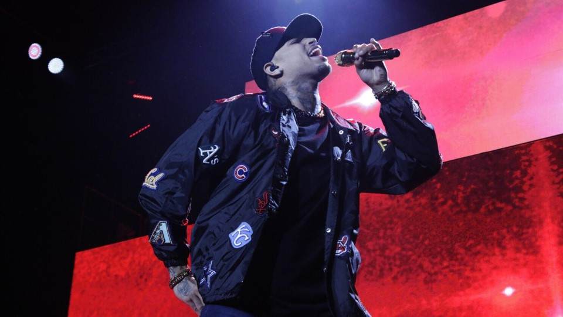

Chris Brown recorded the debuting album Chris Brown. These songs blew American charts immediately; the sales broke records, and the album became platinum twice. One of the singles, “Run It” remained number one in Billboard Hot 100 for a month and a half. Six months later, Chris Brown toured in the United States, recorded the materials for the video Chris Brown Journey in Great Britain and Japan, and prepared for the Grammy Awards ceremony. After the tour, the singer began to work on the next album Exclusive: he had collected enough material. In November 2007, the album was finished. Again, the singer was a success: America, Europe, New Zealand, and Australia welcomed Exclusive. The release started from the second position in Billboard 200; more than five million copies were sold. The golden and platinum singles “Wall to Wall,” “Kiss Kiss,” and “Forever” contributed to the artist’s popularity. At the peak of his career, Chris decided to experiment on his sounding. At the end of 2009, the new singles were spread via the Internet. In 2010, Chris Brown began to work on the album F.A.M.E.; in March 2011, he announced the release. Friends and colleagues supported the musician. The single “Deuces” reached number 14 in the chart: the man did not repeat his early success. In July 2012, the singer presented the fifth album. The song "Turn Up the Music” was the leader of the English chart. In fall, Chris Brown won the prestigious Billboard Music Awards. In fall 2014, the sixth studio album, X, came out. It reached the second position in various ratings. As for the following album, Chris Brown collaborated with Tyga. Six months later, the new album Royalty was presented; "Fine By Me,” “Back to Sleep,” and “Zero” were the most famous songs.
(Reference) Brown cranked out material in larger volumes and made more featured appearances through the end of the 2010s. Heartbreak on a Full Moon arrived in October 2017 with 45 songs on its deluxe edition. It entered the Billboard 200 at number three, making it the artist's eighth consecutive Top Ten album. The following year, Brown appeared on a few high-profile collaborative singles, highlighted by Lil Dicky's "Freaky Friday," another Top Ten hit. In June 2019, Brown returned with his ninth solo album, the chart-topping double-length Indigo. A track from the LP, "No Guidance," was nominated for a Grammy for Best R&B Song. The commercial mixtape Slime & B, a collaboration with Young Thug, followed in May 2020 and hit number 24 on the Billboard 200. Early 2022 saw the release of the bouncy single "Iffy," ahead of the arrival of the full-length Breezy, which arrived later that year.
(Reference)